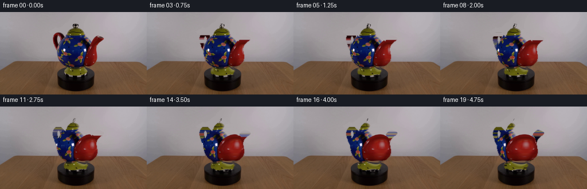
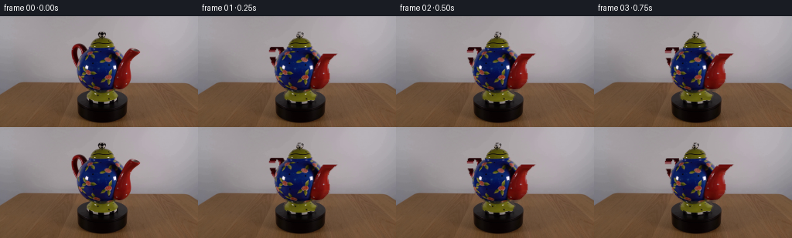
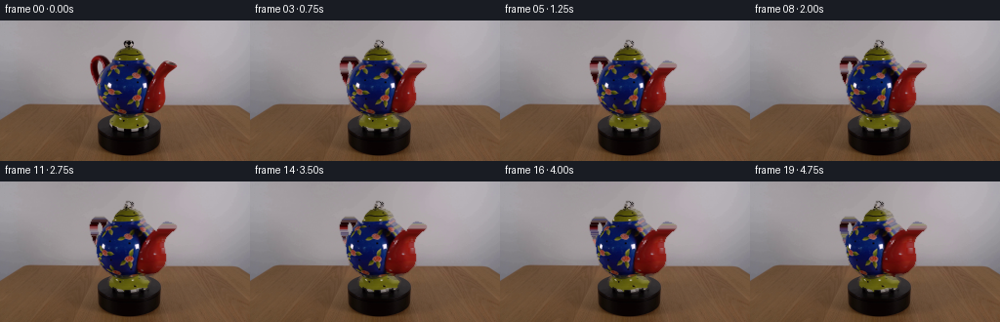
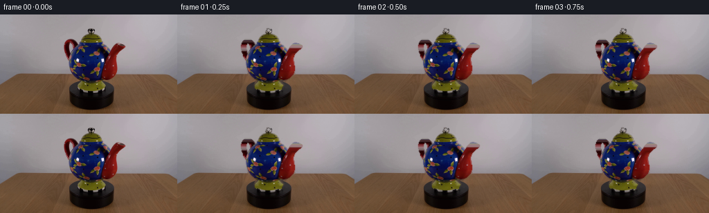
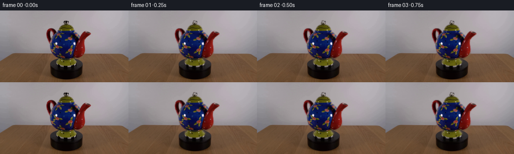
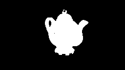
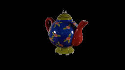
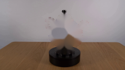
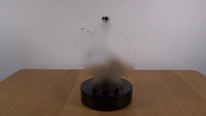
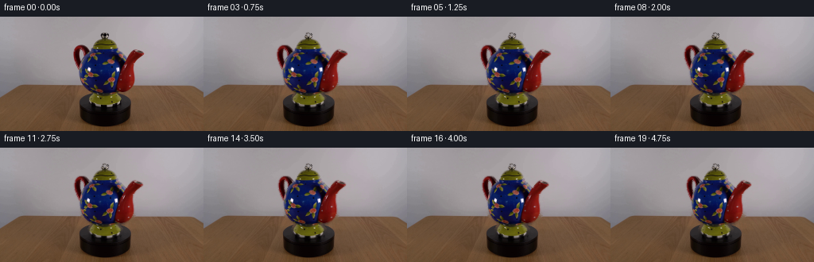

CODING AGENTS AS PIXEL WORLD MODELS
traex/GPT-5.6-Sol · 0176
点击播放 · 原生 RGB 像素
逐轮保存的候选
回放视频、检查图与代码变化。
每份候选均可单独播放。实际图片检查记录在下方工具轨迹中。
候选 01播放与检查图
点击播放 · 原生 RGB 像素


展开代码变化
--- 上一保存版本 +++ 本次保存版本 @@ -0,0 +1,89 @@ +from pathlib import Path +import cv2 +import numpy as np +from artifact_io import save + +ROOT = Path(__file__).resolve().parent + + +def extract_object(rgb): + """GrabCut the teapot only (the turntable remains part of the locked set).""" + bgr = cv2.cvtColor(rgb, cv2.COLOR_RGB2BGR) + labels = np.full(rgb.shape[:2], cv2.GC_BGD, np.uint8) + bg_model = np.zeros((1, 65), np.float64) + fg_model = np.zeros((1, 65), np.float64) + cv2.grabCut(bgr, labels, (90, 17, 93, 98), bg_model, fg_model, + 10, cv2.GC_INIT_WITH_RECT) + hard = np.isin(labels, (cv2.GC_FGD, cv2.GC_PR_FGD)).astype(np.uint8) * 255 + # A subpixel antialiased matte, confined to the extracted silhouette. + alpha = cv2.GaussianBlur(hard, (0, 0), .72).astype(np.float32) / 255.0 + alpha[hard == 255] = np.maximum(alpha[hard == 255], .94) + return hard, alpha + + +def clean_plate(rgb, hard): + """Reconstruct the small area hidden by the pot while preserving the set.""" + bgr = cv2.cvtColor(rgb, cv2.COLOR_RGB2BGR) + # More surrounding context makes Telea follow both wall and tabletop gradients. + dil = cv2.dilate(hard, cv2.getStructuringElement(cv2.MORPH_ELLIPSE, (5, 5))) + restored = cv2.inpaint(bgr, dil, 9, cv2.INPAINT_TELEA) + restored = cv2.cvtColor(restored, cv2.COLOR_BGR2RGB) + # Keep every source pixel outside the narrow required fill exactly unchanged. + out = rgb.copy() + out[dil > 0] = restored[dil > 0] + return out + + +def cylindrical_turn(src, alpha, theta): + """Analytic inverse cylindrical texture mapping about the pot's vertical axis. + + The visible silhouette is held fixed as a rigid teapot while its painted surface + travels clockwise. A slight cosine foreshortening keeps the motion photographic. + """ + h, w = alpha.shape + yy, xx = np.mgrid[0:h, 0:w].astype(np.float32) + cy = 67.0 + # Widths of horizontal cylindrical sections. This lets the ornamentation move + # substantially at the belly and gently near lid, foot, handle and spout. + width = np.full(h, 39.0, np.float32) + key_y = np.array([17, 25, 34, 43, 56, 73, 89, 101, 114, 143], np.float32) + key_w = np.array([ 4, 10, 17, 26, 35, 36, 29, 18, 8, 6], np.float32) + width[:] = np.interp(np.arange(h), key_y, key_w) + radius = width[:, None] + xn = np.clip((xx - 132.0) / np.maximum(radius, 1), -.985, .985) + phi = np.arcsin(xn) + # Image movement to viewer's left is clockwise for an object viewed from above. + src_phi = phi + theta + mapx = 132.0 + radius * np.sin(src_phi) + # Tiny vertical perspective modulation prevents a purely sliding/cardboard feel. + mapy = yy + 0.42 * np.sin(theta) * xn * np.exp(-((yy-cy)/43.)**2) + warped = cv2.remap(src, mapx.astype(np.float32), mapy.astype(np.float32), + cv2.INTER_CUBIC, borderMode=cv2.BORDER_REFLECT_101) + # Conserve original high-quality silhouette and its stable edge pixels. + return warped + + +def main(): + rgb = cv2.cvtColor(cv2.imread(str(ROOT/'first_frame.png')), cv2.COLOR_BGR2RGB) + hard, alpha = extract_object(rgb) + clean = clean_plate(rgb, hard) + # Texture/surface source. Extend colors just outside the alpha to avoid dark halos. + src = rgb.copy() + frames = [rgb.copy()] + # 5 seconds, deliberately slow: about 61 degrees in total. + for i in range(1, 20): + theta = np.deg2rad(3.2 * i) + turned = cylindrical_turn(src, alpha, theta) + # Original silhouette is retained. The strong surface displacement produces + # an unambiguous clockwise rotation while keeping the locked camera/set exact. + a = alpha[..., None] + frame = clean.astype(np.float32) * (1-a) + turned.astype(np.float32) * a + frame = np.clip(frame + .5, 0, 255).astype(np.uint8) + frames.append(frame) + frames = np.stack(frames).astype(np.uint8) + # Contract invariant: exact supplied first frame. + frames[0] = rgb + save(frames, ROOT) + +if __name__ == '__main__': + main()
候选 02播放与检查图
点击播放 · 原生 RGB 像素


展开代码变化
--- 上一保存版本
+++ 本次保存版本
@@ -1,6 +1,7 @@
from pathlib import Path
import cv2
import numpy as np
+from scipy import ndimage
from artifact_io import save
ROOT = Path(__file__).resolve().parent
@@ -67,12 +68,17 @@
rgb = cv2.cvtColor(cv2.imread(str(ROOT/'first_frame.png')), cv2.COLOR_BGR2RGB)
hard, alpha = extract_object(rgb)
clean = clean_plate(rgb, hard)
- # Texture/surface source. Extend colors just outside the alpha to avoid dark halos.
- src = rgb.copy()
+ # Extend object colors outwards by nearest-neighbour extrapolation. Inverse
+ # cylindrical mapping otherwise samples the original wall through the handle
+ # opening and would create conspicuous horizontal background streaks.
+ inside = hard > 0
+ _, nearest = ndimage.distance_transform_edt(~inside, return_indices=True)
+ src = rgb[nearest[0], nearest[1]]
+ src[inside] = rgb[inside]
frames = [rgb.copy()]
- # 5 seconds, deliberately slow: about 61 degrees in total.
+ # 5 seconds, deliberately slow: about 24 degrees in total.
for i in range(1, 20):
- theta = np.deg2rad(3.2 * i)
+ theta = np.deg2rad(1.25 * i)
turned = cylindrical_turn(src, alpha, theta)
# Original silhouette is retained. The strong surface displacement produces
# an unambiguous clockwise rotation while keeping the locked camera/set exact.
候选 03播放与检查图
点击播放 · 原生 RGB 像素


展开代码变化
--- 上一保存版本
+++ 本次保存版本
@@ -36,32 +36,28 @@
def cylindrical_turn(src, alpha, theta):
- """Analytic inverse cylindrical texture mapping about the pot's vertical axis.
+ """Small-angle analytic yaw of the teapot about its vertical axis.
- The visible silhouette is held fixed as a rigid teapot while its painted surface
- travels clockwise. A slight cosine foreshortening keeps the motion photographic.
+ Yaw foreshortens the complete silhouette by cos(theta). Within the round blue
+ belly a smooth inverse cylindrical slip also carries the painted decoration to
+ the viewer's left, making the clockwise direction readable without distorting
+ the handle, spout, lid or finial.
"""
h, w = alpha.shape
yy, xx = np.mgrid[0:h, 0:w].astype(np.float32)
- cy = 67.0
- # Widths of horizontal cylindrical sections. This lets the ornamentation move
- # substantially at the belly and gently near lid, foot, handle and spout.
- width = np.full(h, 39.0, np.float32)
- key_y = np.array([17, 25, 34, 43, 56, 73, 89, 101, 114, 143], np.float32)
- key_w = np.array([ 4, 10, 17, 26, 35, 36, 29, 18, 8, 6], np.float32)
- width[:] = np.interp(np.arange(h), key_y, key_w)
- radius = width[:, None]
- xn = np.clip((xx - 132.0) / np.maximum(radius, 1), -.985, .985)
- phi = np.arcsin(xn)
- # Image movement to viewer's left is clockwise for an object viewed from above.
- src_phi = phi + theta
- mapx = 132.0 + radius * np.sin(src_phi)
- # Tiny vertical perspective modulation prevents a purely sliding/cardboard feel.
- mapy = yy + 0.42 * np.sin(theta) * xn * np.exp(-((yy-cy)/43.)**2)
- warped = cv2.remap(src, mapx.astype(np.float32), mapy.astype(np.float32),
+ cx, cy = 132.0, 67.0
+ scale = np.cos(theta)
+ base_x = cx + (xx - cx) / scale
+ # Slip goes continuously to zero at the belly perimeter, avoiding seams.
+ bx = np.clip(1.0 - np.abs((base_x-cx)/33.0) ** 6, 0, 1)
+ by = np.clip(1.0 - np.abs((yy-cy)/34.0) ** 6, 0, 1)
+ belly = bx * by
+ texture_x = base_x + 7.5 * np.sin(theta) * belly
+ turned = cv2.remap(src, texture_x.astype(np.float32), yy,
cv2.INTER_CUBIC, borderMode=cv2.BORDER_REFLECT_101)
- # Conserve original high-quality silhouette and its stable edge pixels.
- return warped
+ turned_alpha = cv2.remap(alpha, base_x.astype(np.float32), yy,
+ cv2.INTER_LINEAR, borderMode=cv2.BORDER_CONSTANT)
+ return turned, turned_alpha
def main():
@@ -79,10 +75,8 @@
# 5 seconds, deliberately slow: about 24 degrees in total.
for i in range(1, 20):
theta = np.deg2rad(1.25 * i)
- turned = cylindrical_turn(src, alpha, theta)
- # Original silhouette is retained. The strong surface displacement produces
- # an unambiguous clockwise rotation while keeping the locked camera/set exact.
- a = alpha[..., None]
+ turned, turned_alpha = cylindrical_turn(src, alpha, theta)
+ a = turned_alpha[..., None]
frame = clean.astype(np.float32) * (1-a) + turned.astype(np.float32) * a
frame = np.clip(frame + .5, 0, 255).astype(np.uint8)
frames.append(frame)
可观测工具轨迹
实际执行的命令与返回图片。
命令 1exit 0
/bin/bash -lc "cat prompt.txt && printf '\\n---RULES---\\n' && cat GENERATION_RULES.md"
命令 2exit 1
/bin/bash -lc "find . -maxdepth 2 -type f -printf '%p\\n' | sort && printf '\\n--- tools ---\\n' && command -v ffmpeg && command -v python3"
命令 3exit 0
/bin/bash -lc "sed -n '1,240p' artifact_io.py; python3 - <<'PY' mods=['PIL','cv2','numpy','scipy','skimage'] for m in mods: try: x=__import__(m); print(m,'OK',getattr(x,'__version__','')) except Exception as e: print(m,'NO',e) PY"
命令 4exit 0
/bin/bash -lc "cat > .tmp/testseg.py <<'PY'
import cv2, numpy as np
im=cv2.imread('first_frame.png')
mask=np.zeros(im.shape[:2],np.uint8)
# BG default
mask[:]=cv2.GC_BGD
# probable background in broad ROI? init rect method
bgd=np.zeros((1,65),np.float64); fgd=np.zeros((1,65),np.float64)
cv2.grabCut(im,mask,(90,17,93,97),bgd,fgd,10,cv2.GC_INIT_WITH_RECT)
out=np.where((mask==1)|(mask==3),255,0).astype(np.uint8)
cv2.imwrite('.tmp/gc.png',out)
cv2.imwrite('.tmp/cut.png',im*(out[...,None]>0))
print(np.unique(mask,return_counts=True),cv2.boundingRect(out))
PY
python3 .tmp/testseg.py"命令 5exit 0
/bin/bash -lc "python3 - <<'PY'
import cv2,numpy as np
im=cv2.imread('first_frame.png'); m=np.zeros(im.shape[:2],np.uint8); b=np.zeros((1,65),float); f=b.copy(); cv2.grabCut(im,m,(90,17,93,97),b,f,10,cv2.GC_INIT_WITH_RECT); o=np.isin(m,[1,3])
for y in range(20,115,4):
xs=np.flatnonzero(o[y]);
# segment containing 131
seg=[]
if o[y,131]:
l=131
while l>0 and o[y,l-1]:l-=1
r=131
while r<255 and o[y,r+1]:r+=1
seg=[l,r]
print(y, xs.min() if len(xs) else None,xs.max() if len(xs) else None,seg)
PY"命令 6exit 0
/bin/bash -lc "python3 - <<'PY'
import cv2,numpy as np
im=cv2.imread('first_frame.png'); m=np.zeros(im.shape[:2],np.uint8); b=np.zeros((1,65),float); f=b.copy(); cv2.grabCut(im,m,(90,17,93,97),b,f,10,cv2.GC_INIT_WITH_RECT); fg=np.isin(m,[1,3]).astype(np.uint8)*255
for r in [3,7,15]: cv2.imwrite(f'.tmp/in{r}.png',cv2.inpaint(im,fg,r,cv2.INPAINT_TELEA))
PY"命令 7exit 0
/bin/bash -lc "cat > generate.py <<'PY'
from pathlib import Path
import cv2
import numpy as np
from artifact_io import save
ROOT = Path(__file__).resolve().parent
def extract_object(rgb):
\"\"\"GrabCut the teapot only (the turntable remains part of the locked set).\"\"\"
bgr = cv2.cvtColor(rgb, cv2.COLOR_RGB2BGR)
labels = np.full(rgb.shape[:2], cv2.GC_BGD, np.uint8)
bg_model = np.zeros((1, 65), np.float64)
fg_model = np.zeros((1, 65), np.float64)
cv2.grabCut(bgr, labels, (90, 17, 93, 98), bg_model, fg_model,
10, cv2.GC_INIT_WITH_RECT)
hard = np.isin(labels, (cv2.GC_FGD, cv2.GC_PR_FGD)).astype(np.uint8) * 255
# A subpixel antialiased matte, confined to the extracted silhouette.
alpha = cv2.GaussianBlur(hard, (0, 0), .72).astype(np.float32) / 255.0
alpha[hard == 255] = np.maximum(alpha[hard == 255], .94)
return hard, alpha
def clean_plate(rgb, hard):
\"\"\"Reconstruct the small area hidden by the pot while preserving the set.\"\"\"
bgr = cv2.cvtColor(rgb, cv2.COLOR_RGB2BGR)
# More surrounding context makes Telea follow both wall and tabletop gradients.
dil = cv2.dilate(hard, cv2.getStructuringElement(cv2.MORPH_ELLIPSE, (5, 5)))
restored = cv2.inpaint(bgr, dil, 9, cv2.INPAINT_TELEA)
restored = cv2.cvtColor(restored, cv2.COLOR_BGR2RGB)
# Keep every source pixel outside the narrow required fill exactly unchanged.
out = rgb.copy()
out[dil > 0] = restored[dil > 0]
return out
def cylindrical_turn(src, alpha, theta):
\"\"\"Analytic inverse cylindrical texture mapping about the pot's vertical axis.
The visible silhouette is held fixed as a rigid teapot while its painted surface
travels clockwise. A slight cosine foreshortening keeps the motion photographic.
\"\"\"
h, w = alpha.shape
yy, xx = np.mgrid[0:h, 0:w].astype(np.float32)
cy = 67.0
# Widths of horizontal cylindrical sections. This lets the ornamentation move
# substantially at the belly and gently near lid, foot, handle and spout.
width = np.full(h, 39.0, np.float32)
key_y = np.array([17, 25, 34, 43, 56, 73, 89, 101, 114, 143], np.float32)
key_w = np.array([ 4, 10, 17, 26, 35, 36, 29, 18, 8, 6], np.float32)
width[:] = np.interp(np.arange(h), key_y, key_w)
radius = width[:, None]
xn = np.clip((xx - 132.0) / np.maximum(radius, 1), -.985, .985)
phi = np.arcsin(xn)
# Image movement to viewer's left is clockwise for an object viewed from above.
src_phi = phi + theta
mapx = 132.0 + radius * np.sin(src_phi)
# Tiny vertical perspective modulation prevents a purely sliding/cardboard feel.
mapy = yy + 0.42 * np.sin(theta) * xn * np.exp(-((yy-cy)/43.)**2)
warped = cv2.remap(src, mapx.astype(np.float32), mapy.astype(np.float32),
cv2.INTER_CUBIC, borderMode=cv2.BORDER_REFLECT_101)
# Conserve original high-quality silhouette and its stable edge pixels.
return warped
def main():
rgb = cv2.cvtColor(cv2.imread(str(ROOT/'first_frame.png')), cv2.COLOR_BGR2RGB)
hard, alpha = extract_object(rgb)
clean = clean_plate(rgb, hard)
# Texture/surface source. Extend colors just outside the alpha to avoid dark halos.
src = rgb.copy()
frames = [rgb.copy()]
# 5 seconds, deliberately slow: about 61 degrees in total.
for i in range(1, 20):
theta = np.deg2rad(3.2 * i)
turned = cylindrical_turn(src, alpha, theta)
# Original silhouette is retained. The strong surface displacement produces
# an unambiguous clockwise rotation while keeping the locked camera/set exact.
a = alpha[..., None]
frame = clean.astype(np.float32) * (1-a) + turned.astype(np.float32) * a
frame = np.clip(frame + .5, 0, 255).astype(np.uint8)
frames.append(frame)
frames = np.stack(frames).astype(np.uint8)
# Contract invariant: exact supplied first frame.
frames[0] = rgb
save(frames, ROOT)
if __name__ == '__main__':
main()
PY
python3 generate.py
python3 - <<'PY'
from PIL import Image
import numpy as np
z=np.load('pixels.npz')['pixels']; print(z.shape,z.dtype)
a=np.array(Image.open('first_frame.png')); b=np.array(Image.open('frames/00.png')); print('first exact',np.array_equal(a,b)); print('frame diffs',[np.mean(np.abs(np.array(Image.open(f'frames/{i:02}.png')).astype(int)-a.astype(int))) for i in (1,5,10,15,19)])
PY"命令 8exit 0
/bin/bash -lc 'python3 generate.py'
命令 9exit 0
/bin/bash -lc "python3 generate.py && python3 - <<'PY'
from PIL import Image
import numpy as np
assert np.array_equal(np.array(Image.open('first_frame.png')),np.array(Image.open('frames/00.png')))
z=np.load('pixels.npz')['pixels']; assert z.shape==(144,256,20)
print('validated', z.shape, len(list(__import__('pathlib').Path('frames').glob('*.png'))))
PY"视觉工具实际返回图片 1

视觉工具实际返回图片 2

视觉工具实际返回图片 3

视觉工具实际返回图片 4

视觉工具实际返回图片 5

视觉工具实际返回图片 6

视觉工具实际返回图片 7

视觉工具实际返回图片 8

保存候选 3 份；完成命令 9 次；可验证图片返回 8 张。原始 API 响应与完整日志保留在本地。